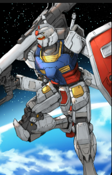
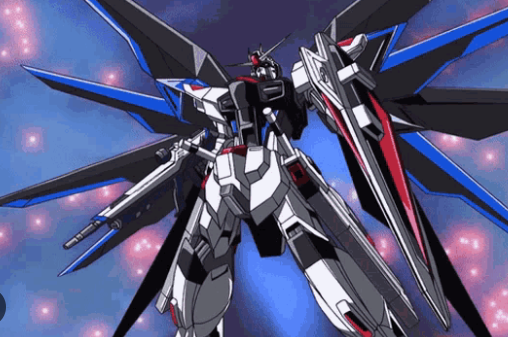
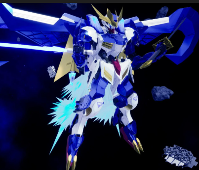
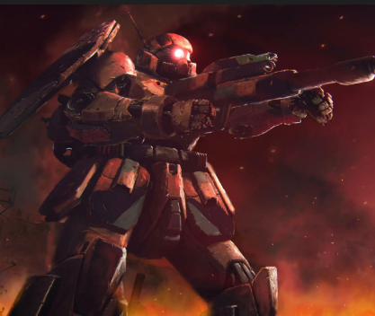
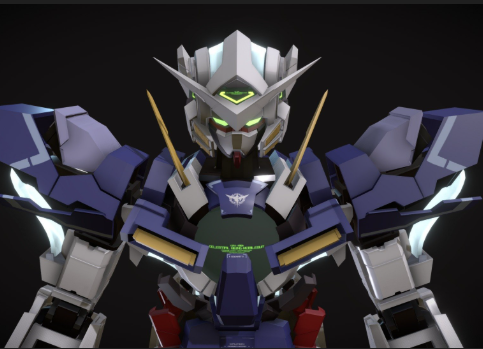
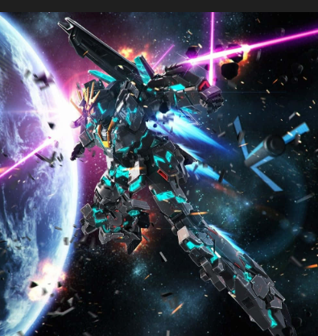
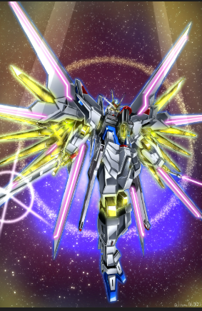

RX-78-2

First Gundam ever created.

First Gundam ever created.

One of the most powerful Gundams.

Gundam from IBO series.

Enemy mobile suit from the Universal Century.

Mobile suit from the Gundam 00 series.

Mobile suit from the Gundam 00 series.

Upgraded version of the Freedom Gundam.
For detailed information on Mobile Suits, visit: Gundam Wiki - Mobile Suits